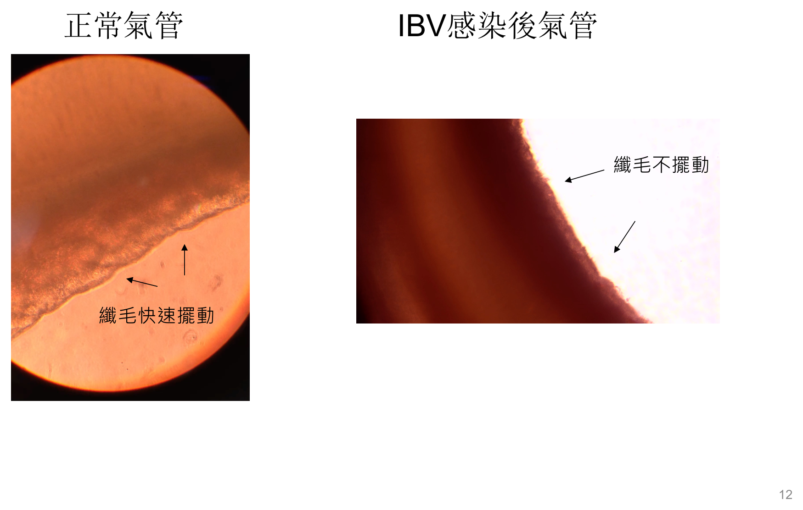
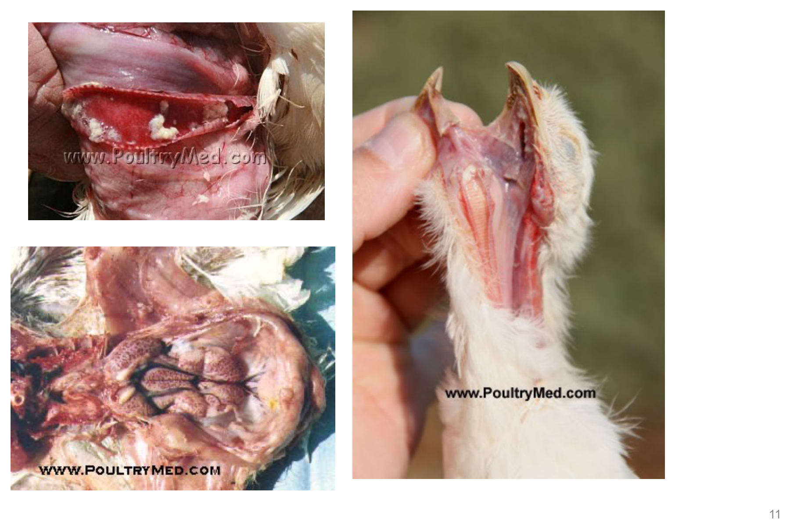
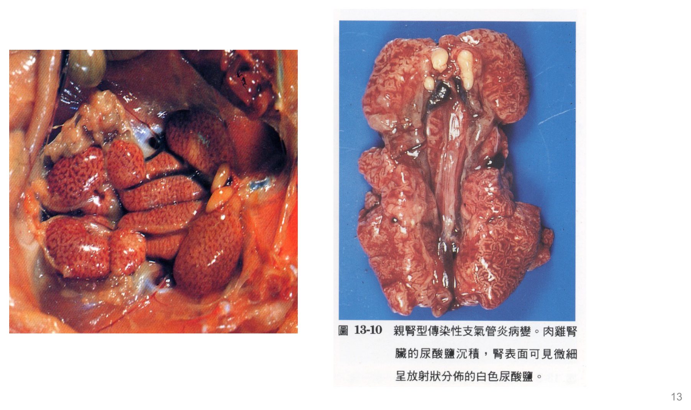
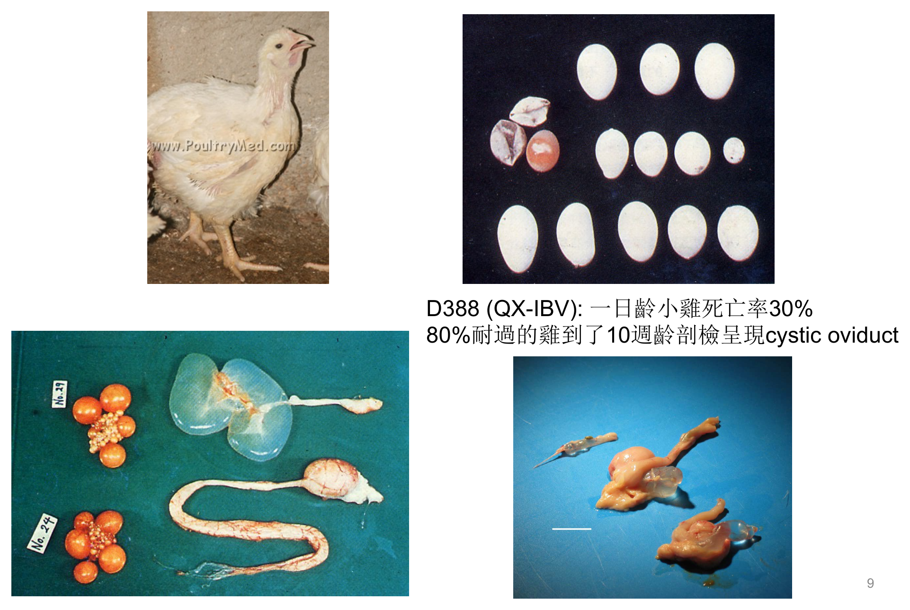
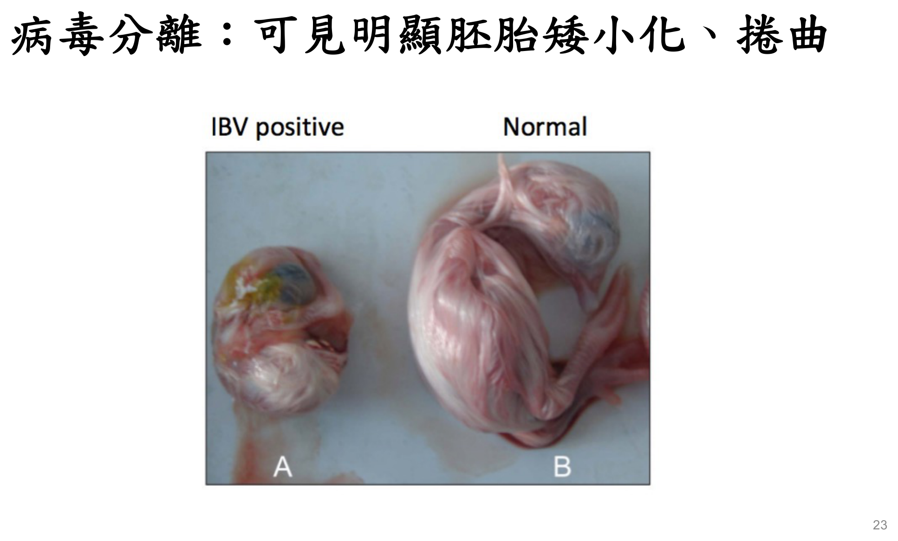

重點摘要
- IB 是「感染率／發病率高、但死亡率低」的代表性禽病，與 AI／ND（高死亡率）形成鮮明對比：發病率幾乎達 100%，但死亡率除雛雞外通常不高（6 週齡以上幾乎無死亡）——這組對比是禽病學鑑別診斷分類（依死亡率高低分群）的入門考點，也是台灣「乙類動物傳染病」分級的依據之一。
- 病原型分類是全章的核心骨架，五種病原型對應五種主要病變位置：親呼吸道型（M41、Ark99）、親腎型（多數台灣分離株）、親輸卵管型（Mass、Australia T，可致 false layer syndrome）、親腺胃型（QX-IBV）、其他變異株（793B 致胸肌壞死）——看到病變描述要能反推病原型，是選擇題與申論題的核心出題邏輯。
- 血清型與基因型是兩套不同的分類系統，臨床意義也不同：血清型（依病毒中和反應分類，如麻州、康州、阿肯色）直接決定疫苗保護力——同血清型疫苗才能保護、不同血清型無法交叉保護；基因型（依 S1 基因序列分類，全球 32 型，台灣本土株屬第七型）則是分子流行病學監測用的分類系統，兩者不能混用。
- 感染日齡決定輸卵管損傷是否「永久」，是 false layer syndrome 的成因核心：1 日齡小雞感染會造成輸卵管永久性傷害而終生不產蛋；6 週齡以上感染則只引起可恢復的輸卵管炎——這個年齡依賴性病變嚴重度的概念，同時解釋了 cystic oviduct（囊狀輸卵管）的形成機轉，是國考申論題的常見主軸。
- 產蛋雞感染的生產損失描述要能具體量化：呼吸症狀後產蛋下降可達 50%，軟殼、粗殼、畸形蛋增多，蛋白呈水樣、孵化率降低；產蛋通常需 6–8 週後才回升，且多數無法恢復到感染前的正常水準——這是蛋雞／種雞場經濟損失評估的關鍵描述。
- 病毒分離的特徵性所見是「胚胎矮小化、捲曲」：將檢體接種於 9–11 日齡 SPF 雞胚尿囊腔，培養後陽性胚胎會呈現明顯矮小化（dwarfing）與捲曲（curling），是診斷章節最常考的圖像辨識題型。
- 疫苗交叉保護差是 IB 防控最大的挑戰，因此免疫計畫需要「多型別輪替」：IB 病毒容易發生基因重組、血清型眾多，單一型別疫苗保護力有限；建議免疫計畫中使用一種以上型別的疫苗（例如活毒第一劑用麻州型、第二劑以上換用不同型別），才能達到較廣效的保護。
- 產蛋期間使用活毒疫苗可能造成暫時性產蛋下降與蛋品質降低，因此蛋雞／種雞場常採用「活毒（基礎免疫）＋死毒（開產前補強）併用」的計畫，死毒疫苗雖成本較高、需逐隻注射，但免疫力更持久、不會散毒也無毒力回歸風險，且能提供母雞更高更整齊的母源抗體給後代小雞。
病原學與基因型／血清型 Virology, Genotype & Serotype
IB 是史上首次發現由冠狀病毒引起的疾病，病毒本身高度易變，是理解後續病原型分類與疫苗效果有限的起點。
疾病背景
- 首宗病例報告在美國 1930 年，當時稱為「新呼吸器病（New respiratory disease）」
- 1940 年代報告指出會造成產蛋率下降
- 1960 年代發現有腎炎型病變
- 台灣歸類為「乙類動物傳染病」
病毒分類與特性
| 項目 | 內容 |
|---|---|
| 科／屬 | Coronaviridae（冠狀病毒科）／ Group 3 coronavirus |
| 基因體 | 正義單股 RNA（positive sense ssRNA），約 27.6 kb |
| 顆粒 | 約 120 nm，具封套（enveloped virion） |
基因型 Genotype
依 S1 基因序列，已發表的 1,652 毒株可劃分為 32 個基因型；台灣本土株屬於第七型（VII）。
血清型 Serotype重要
依病毒中和反應分成不同血清型，各國分類方法不一，美國多以地名命名，如麻州（Mass）、康州（Conn）、阿肯色（Ark）、Iowa等。
血清型是選擇疫苗的關鍵依據：同樣的血清型 → 疫苗可以預防；不同的血清型 → 疫苗無法預防。這是 IB 疫苗效果有限、需要多型別輪替接種的根本原因。
病原型分類 Pathotype
病原型（pathotype）依病毒偏好侵犯的器官分類，是預測臨床病變、鑑別診斷的核心邏輯——看到病變描述，要能反推可能的病原型。
| 病原型 | 代表毒株 | 主要病變 |
|---|---|---|
| 親呼吸道型 Respirotropic | 美國分離株，如 M41、Ark99 | 嚴重呼吸症狀，無腎病變 |
| 親腎型 Nephrotropic | Australia T、Gray、Holte、荷蘭 H 株、日本 TM-86、大部份台灣分離株 | 間質性腎炎、尿酸鹽沉積；台灣發生的親腎型毒株亦會引起呼吸症狀 |
| 親輸卵管型 Oviducttropic | 麻州株、Australia T 株 | 輸卵管病變，產蛋下降可達 50%、品質不良，甚至造成 false layer syndrome |
| 親腺胃型 Proventriculotropic | 中國大陸 QX-IBV（腺胃及腎炎混合感染型） | 腺胃黏膜增厚、炎症細胞浸潤 |
| 其他變異株 | 英國 793B 毒株 | 造成胸肌壞死 |
病原型分類並非絕對互斥——例如台灣的親腎型毒株同時會引起呼吸症狀，QX-IBV 屬於腺胃及腎炎混合感染型；複習時應理解「主要病變傾向」而非死背單一對應關係。
臨床症狀 Clinical Signs
IB 潛伏期短、發病率極高，但死亡率因日齡與病毒株而異；產蛋雞的生產損失是臨床評估的重點。
1–3 天
幾乎達 100%
雛雞可達 25% 以上；
6 週齡以上幾乎無死亡
※ 病毒種類、免疫情形、是否二次感染，都會影響死亡率的高低。
一般臨床症狀
- 呼吸症狀：氣管囉音、眼鼻分泌物、甩頭
- 全身症狀：沉鬱、採食降低、羽毛凌亂
- 水便（因多尿所致）
產蛋雞感染的生產損失重要
產蛋雞感染發生呼吸症狀後：產蛋下降可達 50%、蛋質不良、孵化率降低，軟殼、粗殼、畸形蛋增多，蛋白變水樣。產蛋下降的程度與產蛋期及病毒株有關，需 6–8 週後產蛋才可回升，但多數無法回復正常。
D388（QX-IBV）：一日齡小雞死亡率達 30%；80% 耐過的雞到了 10 週齡剖檢呈現 cystic oviduct（囊狀輸卵管），是親輸卵管型病變長期後遺症的典型案例。
病理病變 Gross & Microscopic Lesions
病變分布依病原型而不同，氣管與腎臟是最常考的兩個部位，輸卵管病變則與感染日齡密切相關。
氣管 Trachea
肉眼可見充出血；顯微可見纖毛脫落、上皮細胞漿液性／卡他性炎症、黏膜水腫。若有大腸桿菌混合感染，可見黃色乾酪物（caseous plug）。


氣囊與肺 Air Sac & Lung
氣囊：混濁增厚，若有大腸桿菌混合感染可見黃色乾酪物。肺：支氣管肺炎。
腎臟 Kidney（親腎型）重要
肉眼可見雙側腎臟腫脹，嚴重者尿酸鹽沉積（urate deposition）。顯微可見上皮細胞微絨毛消失，重吸收及分泌皆不良、排尿增加，導致酸血症及脫水；腎小管擴張，堆積尿酸無法排出，上皮壞死掉落於管腔中；腎組織間隙有間質性腎炎、炎症細胞浸潤。

腺胃（親腺胃型）
腺胃黏膜增厚、炎症細胞浸潤。
輸卵管（親輸卵管型）重要
1 日齡小雞感染會造成輸卵管永久性傷害而不產蛋；雞齡越大輸卵管傷害越小；感染 6 週齡以上的雞，只引起輸卵管炎（可恢復），不會造成永久性傷害。組織學上可見上皮細胞變性、壞死、脫落。

傳播與台灣流行病學 Transmission & Epidemiology in Taiwan
IB 傳播力極強、排毒期長，加上病毒易基因重組，是防疫上持續面臨的挑戰。
傳播特性
- 眼鼻分泌物、糞便含有大量病毒，同群雞極易傳染（最小複製數 R = 19.95）
- 可藉由空氣傳播至 1 公里以上
- 感染雞隻可排毒數月，在不同雞隻間循環；感染後 20 週以上仍可由糞便分離到病毒
台灣 IB 發生情形國考重點
- 1958 年：台灣報導第一個病例
- 1964 年：分離到 IB 病毒
- 依基因體序列，台灣本土株可分為兩大群：台灣一型（TW-I）及台灣二型（TW-II）
- 近年除本土型外，也出現許多變異株，彼此之間及與本土株之間呈現不同血清型
屠宰場／雞場監測趨勢
| 年份 | 檢出率 | 主要型別 |
|---|---|---|
| 2005–2006（屠宰場採樣） | 族群盛行率 17%（8/47） | 以台灣一型為主，另有中國重組株、疫苗重組株 |
| 2012–2014（屠宰場採樣） | 白肉雞 39%（26/66）；土雞 12%（5/42） | 以台灣二型為主，另有日本重組株 |
| 2019（屠宰場、雞場採樣） | 中部 71%（100/140）；南部 62%（8/13） | 以台灣一型、二型為主，仍有變異株（9% 土雞） |
※ 資料來源：108 年家禽重要疾病診斷研判圓桌會議。趨勢顯示台灣 IB 檢出率逐年上升，且持續有跨國重組株出現，反映 IB 病毒容易發生基因重組的特性。
診斷 Diagnosis
診斷分抗原偵測與抗體偵測兩大類，病毒分離的胚胎變化是最具代表性的圖像考點。
抗原偵測（病毒偵測）
檢體：咽喉拭子（throat swab）、泄殖腔拭子（cloacal swab）、糞便；病材：氣管、肺、腎、盲腸扁桃等。
IFA 或 IHC
病毒分離技術重要
接種於 9–11 日齡 SPF 雞胚胎的尿囊腔（Allantoic cavity）。

抗體偵測
具血清型別特異性，常用方法：
酵素連結免疫吸附試驗
免疫螢光試驗
血球凝集抑制試驗
中和試驗
疫苗與免疫計畫 Vaccination Programs
IB 疫苗因交叉保護差，免疫計畫的設計邏輯遠比單一疾病疫苗複雜，肉雞、蛋雞／種雞的策略也不同。
減毒疫苗製作原理
病毒在雞胚胎中連續繼代，對雞胚胎的毒力會升高，同時對雞隻的毒力會降低。疫苗廠商將麻州型毒株經雞胚胎高度繼代減毒製造出 H120 疫苗；台灣亦有將台灣一型、台灣二型病毒經雞胚胎繼代製作成減毒疫苗。
肉雞 IB 接種計畫
適用於需要早期保護呼吸道的肉雞群，以粗顆粒噴霧方式接種，激發上呼吸道黏膜局部免疫；免疫力持久性不高（約 2–6 週），僅侷限於上呼吸道。補強時機依上市週齡而異（小型雞 2 週齡、大型雞 3 週齡）。
適用於未在孵化場接種的雞群，接種於稍大雞隻可較不易受母源抗體干擾，此時免疫系統發育也較完全；接種雞齡越大，免疫反應越好。
接種非設計用於 1 日齡使用的疫苗，可能引起嚴重的接種後反應；疫苗接種操作要確實，同一天對同一場內所有雞隻全部接種，以降低接種後呼吸道起伏反應的強度及持續時間。
蛋雞／種雞 IB 接種計畫
可保護成長雞隻的呼吸道、腎臟及輸卵管，維持呼吸道黏膜局部免疫；但種雞群提供給後代小雞的母源抗體不高且較不一致。初次與二次補強間距約 2–3 週，之後可增為 4–6 週；產蛋雞群應每隔 30–60 天補強一劑，產蛋期宜使用較弱毒株（如麻州株）。
可避免產蛋期間使用活毒；不活化死毒疫苗提供更持久的免疫力，種雞群可提供後代小雞高量且整齊的母源抗體。通常在開始產蛋前 4 週完成死毒接種，以活毒疫苗完整基礎免疫的雞群可促進死毒疫苗的免疫反應。
兩種計畫的優缺點比較重要
| 計畫 | 優點 | 缺點 |
|---|---|---|
| 只用活毒 | 局部免疫效果良好；增強交叉保護與老產蛋雞群免疫效果；可巨量接種 | 必須在產蛋中使用活毒；接種後反應可能致產蛋下降、蛋質降低；環境中有散毒及毒力回歸風險；產蛋高峰時免疫力較低 |
| — | — | |
| 活毒＋死毒併用 | 免疫力較持久；不散毒、無毒力回歸；可減少產蛋中使用活毒；能增強產蛋高峰期免疫力；多價疫苗一針含數種抗原、每隻雞都能接種到 | 增加接種成本；需逐隻接種；操作不慎可能誤注射到操作人員；產蛋後半階段保護力可能下降 |
| — | — |
圓桌會議建議免疫計畫
| 類別 | 建議時程 |
|---|---|
| 肉雞 | 1–4 日齡：活毒疫苗噴霧或點眼進行基礎免疫；10–14 日齡：活毒疫苗飲水、噴霧或點眼進行補強 |
| 蛋雞／種雞 | 1–4 日齡：活毒噴霧或點眼基礎免疫；2–6 週齡：活毒飲水、噴霧或點眼補強；16–18 週齡（或產蛋前 4–6 週）：不活化疫苗皮下或肌肉注射補強 |
※ 資料來源：108 年家禽重要疾病診斷研判圓桌會議。
由於 IB 不同病毒株疫苗間交叉保護效力不佳，建議免疫計畫中使用一種以上型別的病毒株製成疫苗，才能達到較廣效的免疫保護（例如：活毒第一劑使用麻州血清型疫苗，第二劑以上以不同型別接種）。
IB 免疫成功要素
注意毒株的改變
但勿過度頻繁使用
施作要確實、足量
疫苗接種後不良反應可能原因
- 噴霧顆粒過細
- 接種於黴漿菌陽性的雞群
- 接種於已發生免疫抑制、或有其他呼吸道疾病的雞隻
- 使用強毒株疫苗（例如 H52 株）用於初次基礎免疫
- 雞舍內空氣環境欠佳
疫苗品管與場內處置 Vaccine QC & Farm Management
法規面對疫苗品質有嚴格要求，場內處置則以支持性照護與生物安全為主軸——IB 沒有特效治療藥物。
活毒疫苗法定品管要點（節錄）
雞傳染性支氣管炎活毒疫苗須符合特性試驗、無菌試驗、真空試驗、含濕度試驗、安全試驗（SPF 雞接種後觀察 3 週無不良反應）、病毒含有量試驗（每劑量須含有 300 EID50 以上）、力價試驗（中和指數：試驗組須 2.0 以上、對照組 1.0 以下）、病毒迷入試驗等多項法規要求；不活化死毒疫苗則另有防腐劑含量試驗（蟻醛須 0.2% 以下、Thimerosal 須 0.01% 以下）等規範。
※ 詳細法規條文（特性、無菌、真空、力價、迷入試驗之完整操作步驟）屬於法規查閱範疇，考試重點在於理解「疫苗必須經過嚴格安全與力價把關才能上市」的概念，而非逐條背誦數值。
場內處置（支持性照護，非治療）重要
- 保溫、避免擁擠，改善通風品質
- 給予糖水以補充能量、降低尿酸產生，補充鹽類，改善酸血症——對應親腎型病變造成的排尿增加與脫水機轉
- 本病傳播力強、環境可存活一段時間，必須徹底消毒後才進雞，同一場同齡同進同出
病毒對紫外線敏感，因此陽光為良好的消毒劑；病毒對一般消毒水敏感，0.1% 福馬林可將病毒不活化。
學習重點整理
考試／臨床實務角度的整理，複習前可先快速掃過本節，找出自己不熟的部分再回對應章節細讀。
練習題 Practice Quiz
涵蓋病原學、病原型、臨床症狀、病理病變、流行病學、診斷與疫苗各章節重點，先自己作答再點「顯示答案」核對，答錯的觀念請回對應章節重讀一次。
IBV 屬於 Coronaviridae 科、Group 3 coronavirus，是史上首次發現由冠狀病毒引起的疾病，基因體為正義單股 RNA 約 27.6 kb、具封套。
血清型依病毒中和反應分類（如麻州、康州、阿肯色），直接決定疫苗保護力；基因型依 S1 基因序列分類（全球 32 型，台灣屬第七型），是分子流行病學監測用的分類系統，兩者不同且不能互相取代。
親輸卵管型毒株（如麻州株、Australia T 株）可造成輸卵管病變，產蛋下降可達 50%、蛋質不良，甚至造成 false layer syndrome。
1 日齡小雞的輸卵管仍處於發育早期，病毒感染造成的上皮細胞變性、壞死、脫落會直接破壞輸卵管的正常發育結構，導致永久性傷害；隨雞齡增加，輸卵管發育越成熟、修復能力越好，因此雞齡越大、輸卵管傷害越輕，6 週齡以上感染多半只引起可恢復的輸卵管炎，不會造成永久性傷害。這項年齡依賴性病變嚴重度的機轉，正是 false layer syndrome（終生不產蛋的偽產蛋雞）與 cystic oviduct（囊狀輸卵管）的成因。
微絨毛消失導致重吸收及分泌皆不良、排尿增加，最終導致的是酸血症（非鹼血症）及脫水；腎小管因尿酸堆積無法排出而擴張，上皮壞死掉落在管腔中，腎組織間隙出現間質性腎炎。
IB 的特色是感染率／發病率高（幾乎 100%）但死亡率低（除雛雞外通常不高，6 週齡以上幾乎無死亡），與 AI、ND 的高死亡率形成鮮明對比，這正是三者鑑別診斷分類的重要依據。
產蛋雞感染 IBV 出現呼吸症狀後，產蛋下降可達 50%，蛋質不良、孵化率降低，軟殼、粗殼、畸形蛋增多，蛋白呈水樣。產蛋下降的程度與產蛋期及病毒株有關，通常需 6–8 週後產蛋才可回升，但多數雞群無法回復到感染前的正常生產水準，造成長期的經濟損失。
IBV 病毒分離接種於 9–11 日齡 SPF 雞胚胎的尿囊腔（allantoic cavity），陽性胚胎會呈現明顯矮小化（dwarfing）與捲曲（curling），與正常胚胎外觀差異顯著，是病毒分離陽性判讀最具代表性的特徵。
IB 病毒容易發生基因重組、血清型眾多，而疫苗保護力具有血清型別特異性——同樣血清型疫苗才能預防，不同血清型則無法交叉保護，因此單一型別疫苗的保護效果有限。免疫計畫設計上，建議使用一種以上型別的病毒株製成疫苗進行輪替接種（例如活毒第一劑使用麻州血清型疫苗，第二劑以上以不同型別接種），以涵蓋較廣的血清型範圍，達到較廣效的免疫保護。
活毒＋死毒併用計畫可在開產前以活毒完成基礎免疫，並於開產前約 4 週補強不活化死毒疫苗，提供更持久且整齊的免疫力，同時避免產蛋期間使用活毒疫苗造成暫時性產蛋下降與蛋品質降低；種雞群也能提供後代小雞更高更整齊的母源抗體。
病毒對紫外線敏感，陽光為良好的消毒劑；病毒對一般消毒水也敏感，0.1% 福馬林可將病毒不活化。場內處置應徹底消毒後才進雞，同一場同齡同進同出以降低傳播風險。
台灣自 1958 年首例、1964 年分離病毒後，依病毒基因體序列將本土株分為台灣一型（TW-I）及台灣二型（TW-II）兩大群；近年監測顯示流行主型別由台灣一型逐漸轉為台灣二型，且持續有跨國重組株出現。
IB 沒有特效抗病毒藥物，場內處置以支持性照護與生物安全為主：雛雞需保溫並避免擁擠、改善雞舍通風品質；給予糖水補充能量並降低尿酸產生、補充鹽類以改善酸血症（對應親腎型病變造成的排尿增加與脫水機轉）；此外因本病傳播力強、病毒在環境中可存活一段時間，必須徹底消毒雞舍後才可進雞，並採同一場同齡同進同出的管理方式以阻斷病毒在不同批次雞群間循環。
圓桌會議建議蛋雞／種雞免疫計畫：1–4 日齡以活毒噴霧或點眼進行基礎免疫，2–6 週齡以活毒飲水、噴霧或點眼補強，16–18 週齡（或產蛋前 4–6 週）以不活化疫苗皮下或肌肉注射補強，讓雞隻在開產前有充分時間建立完整的免疫反應。